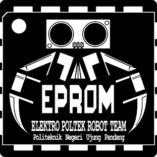
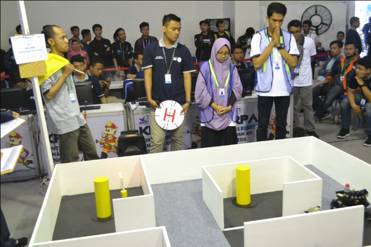

EPROM ROFFCA
Politeknik Negeri Ujung Pandang merupakan sebuah lembaga pendidikan yang membentuk individu yang proposional dibidangnya. Sebagai lembaga pendidikan intelektual yang memberikan ilmu pengetahuan kepada mahasiswa hanya sebatas konteks kurikulum yang ada, dimana konteks kurikulum tersebut belum sepenuhnya mengikuti perkembangan teknologi masa kini sehingga secara khusus sebagai mahasiswa yang aktif mengikuti perkembangan teknologi tersebut berinisiatif membentuk sebuah komunitas Robot yang dinaungi Jurusan Teknik Elektro yang bernama EPROM (Elektro Poltek Robot Team) yang memiliki tugas untuk mengembangkan dan memingkatkan kemampuan dalam konteks informasi modern yang semuanya melibatkan element teknologi masa kini, dalam internal dan external kampus.Apa itu KRI

Robot Indonesia (KRI) merupakan event tahunan yang diselenggarakan DIKTI(Direktorat Jenderal Perguruan tinggi) sebagai media mengembangkan pengetahuan dan kreatifitas mahasiswa. Pada Kontes Robot Indonesia (KRI) tahun 2018 tingkat regional 2 yang dilaksanakan di Kota Bandung, tim EPROM (Elektro Poltek Robot Team) Politeknik Negeri Ujung Pandang berhasil lolos seleksi untuk kategori KRPAI(berkaki), RSBI(beroda), RSBI(humanoid). Dengan prestasi yang telah kami ukir, kami berkeinginan untuk mengikuti Kontes Robot Indonesia (KRI) 2018 tingkat regional tersebut demi mempertahankan dan memajukan insan robotika Sulawesi Selatan umumnya dan Mahasiswa Teknik Elektro Politeknik Negeri Ujung Pandang pada khususnya.